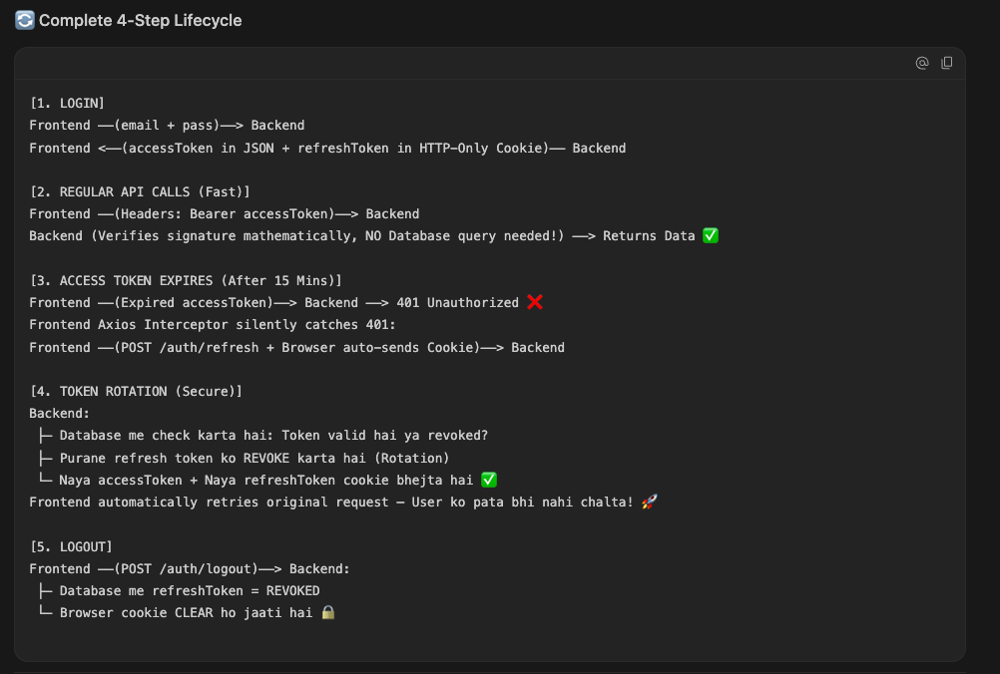

Stateless Sub-1ms Performance, Silent 401 Interception, Refresh Token Rotation, and Multi-Device Theft Detection Explained Step-by-Step.
Is card se aap room ka darwaza, lift aur gym kholte hain. Security guard (Backend Middleware) sirf tap karke signature verify karta hai. Guard ko har baar reception (Database) ko phone nahi karna padta (< 1ms Ultra Fast). Agar ye card chori bhi ho jaye, toh 15 minute me khud expire ho jata hai.
Isse aap room ka darwaza nahi khol sakte. Ye safe locker me band hota hai (HTTP-Only Cookie, JavaScript ise read nahi kar sakti). Iska kaam sirf ek hai: Jab Key Card expire ho jaye, toh reception jaakar naya card issue karwana.

bcrypt.compare().
Backend issues two separate tokens with different lifespans and transmission channels:
// 1. Issue Access Token in JSON Response (Short-lived: 15 mins) const accessToken = generateAccessToken(tokenPayload); // 2. Issue Refresh Token in HTTP-Only Cookie (Long-lived: 7 to 30 days) const refreshToken = generateRefreshToken(tokenPayload); res.cookie('refreshToken', refreshToken, { httpOnly: true, // 🛡️ JavaScript cannot access (100% XSS immune) secure: isProduction, // Transmitted only over HTTPS sameSite: 'lax', // CSRF protection maxAge: rememberMe ? 30 * 24 * 3600000 : 7 * 24 * 3600000 }); // 3. Store SHA-256 Token Hash in PostgreSQL for revocation tracking await authRepository.createRefreshToken({ userId: user.id, tokenHash: hashToken(refreshToken), expiresAt: getRefreshTokenExpiryDate(rememberMe) });
accessToken in the Authorization header.
The backend does not hit the database to verify session. It only verifies the cryptographic signature!
// Mathematical Signature Verification (CPU only, 0ms DB overhead!) const decoded = jwt.verify(token, env.JWT_ACCESS_SECRET); req.user = { id: decoded.userId, role: decoded.role, isAdmin: decoded.isAdmin, isSuperAdmin: decoded.isSuperAdmin, allowedTabs: decoded.allowedTabs }; next(); // ⚡ Instant pass to controller!
401 Unauthorized.
Instead of logging out the user, the frontend Axios Interceptor catches the 401 silently,
pauses any outgoing requests, and triggers a background refresh call.
api.interceptors.response.use( (response) => response.data, async (error) => { const originalRequest = error.config; // Detect 401 Unauthorized if (error.response?.status === 401 && !originalRequest._retry) { originalRequest._retry = true; // 🔄 Silently request new tokens (Browser sends HTTP-Only cookie automatically) const { data } = await axios.post('/api/v1/auth/refresh', {}, { withCredentials: true }); // Save new access token storage.set(STORAGE_KEYS.ACCESS_TOKEN, data.accessToken); originalRequest.headers.Authorization = `Bearer ${data.accessToken}`; // 🚀 Re-execute the original failed request seamlessly! return api(originalRequest); } return Promise.reject(error); } );
revoked: true.export async function refreshSession(refreshToken) { const tokenHash = hashToken(refreshToken); const storedToken = await authRepository.findRefreshToken(tokenHash); // 🚨 THEFT DETECTION: If a revoked token is re-used, a hacker copied it! if (storedToken?.revoked) { // Kill ALL active login sessions for this user across all devices await authRepository.revokeAllUserTokens(decoded.userId); throw new UnauthorizedError('Security breach detected. All sessions revoked.'); } // Normal Flow: Revoke old token & Issue fresh pair await authRepository.revokeRefreshToken(tokenHash); const newAccessToken = generateAccessToken(tokenPayload); const newRefreshToken = generateRefreshToken(tokenPayload); await authRepository.createRefreshToken({ userId: user.id, tokenHash: hashToken(newRefreshToken), expiresAt: getRefreshTokenExpiryDate(false) }); return { user: sanitizeUser(user), accessToken: newAccessToken, refreshToken: newRefreshToken }; }
revoked: true in PostgreSQL.res.clearCookie().export async function logout(req, res, next) { const refreshToken = req.cookies[REFRESH_TOKEN_COOKIE_NAME]; await authLogic.logoutUser(refreshToken); // Clear browser cookie cleanly res.clearCookie(REFRESH_TOKEN_COOKIE_NAME, COOKIE_OPTIONS); return sendSuccessResponse(res, { statusCode: HTTP_STATUS.OK, message: 'Logged out successfully.' }); }